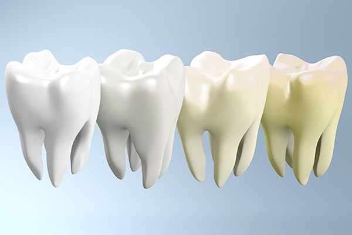

치아가 변색되는 이유
변색으로 인한 치아미백은 사람 마다 구강 내 상태가 다양하고 치료 결과에 대한 기대치가 다릅니다.
치아 변색
치아 표면에는 미세한 구멍이 많은데, 이 구멍으로 여러 원인에 기인하여 치아 안쪽 층부터 변색이 발생하는 것을 말합니다. 치아 착색은 마치 하나의 문제 같아 보이지만 원인은 다양할 수 있습니다.
-
기호식품에 의한 외부적 변색: 플라그나 커피, 홍차, 흡연
-
치석이나 박테리아에 의한 착색
-
연령 증가에 따른 변색
-
선천적, 유전적 변색
-
약물: 치아가 형성되기 시작하는 임신4개월 경부터
출생 후 8~9세 무렵까지 테트라 싸이클린
계통의 항생제를 복용한 경우 -
과량의 불소를 섭취한 경우
-
외상으로 인한 치아의 손상
-
치아 우식이나 아말감 혹은 금속성 치과 보철물로 인한 변색